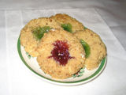

Makes 2 dozen Cook at 375 ½ cup of sugar 2 sticks of butter or margarine 1 teaspoon vanilla 2 egg yokes 2 cups flour Beat all this well Dip balls in egg whites then in walnuts meats and bake for 5 mins then put hole in each and return to oven for 10 mins Makes 2 dozen Cook at 375 ½ cup of sugar 2 sticks of butter or margarine 1 teaspoon vanilla 2 egg yokes 2 cups flour Beat all this well Dip balls in egg whites then in walnuts meats and bake for 5 mins then put hole in each and return to oven for 10 mins |
|
 |